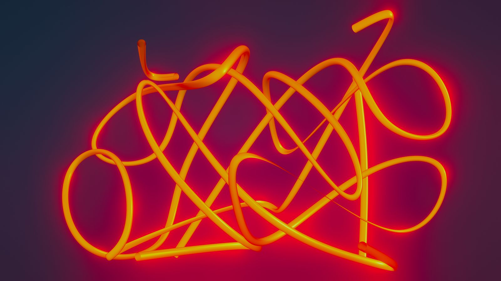
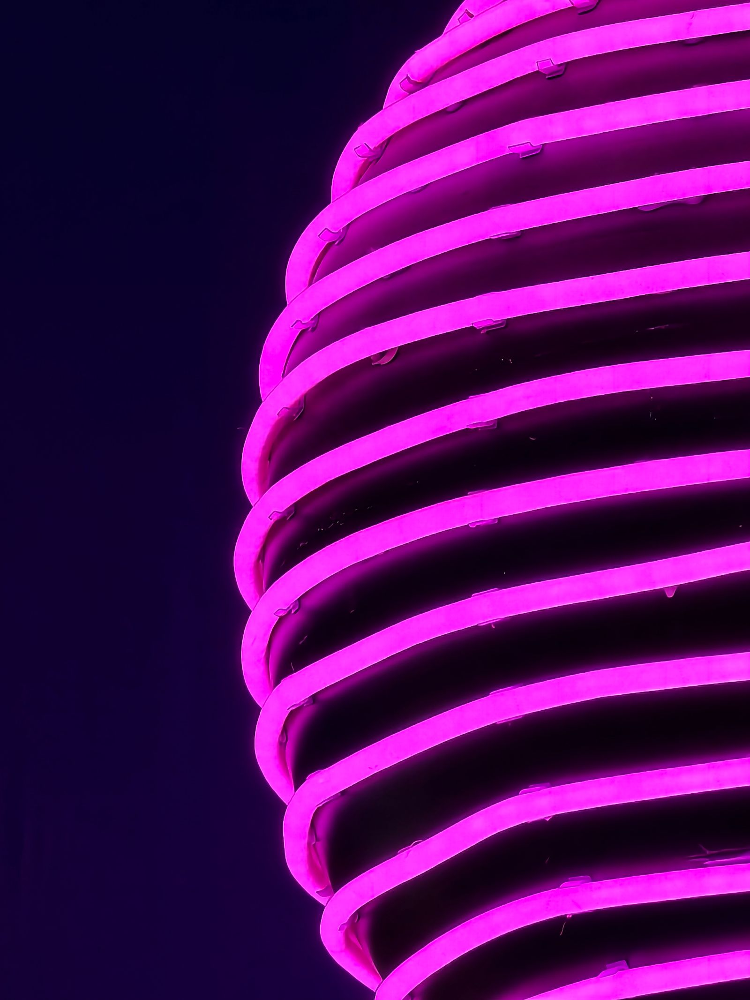
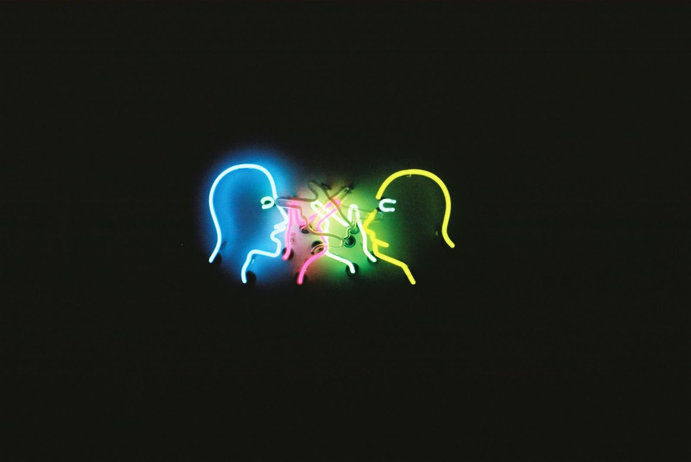

47
Works in the register
Ilves Discharge Lab is the studio of Maren Ilves, a contemporary artist working in bent glass and rare gases — neon, argon, xenon, krypton, helium. No signage, no letters for shopfronts: gallery works, commissions and architectural pieces, each one published with its recipe plate — the gas, the glass, the electrical load, and the name of the hands that bent it. What a work is made of is part of what it means.

| Work | Meridian Breath — a single continuous line of light, 9.2 m across, drawn from the meridians of a nautical chart |
|---|---|
| Gas | Xenon, with a krypton trace in the two shortest runs |
| Glass | 12 mm clear soda glass, uncoated — the colour is the gas, not the tube |
| Tube | 26 m in 5 circuits |
| Load | 2 transformers, 30 mA · 234 W at the wall |
| Bent by | The artist (long runs) · master bender R. Aho (the tight returns) |
| Status | Sold — private collection, Helsinki. Exhibited Galleria Kipinä, autumn 2024 |
The photographs on this site are reference photographs of discharge light, credited under each plate — the works themselves are documented in situ for their owners. The recipe plates are the studio's own, for works of the construction shown.
Of the 612 metres: 388 m bent by the artist, 224 m bent to her drawings by master bender R. Aho and credited as such on every plate. The three dark works are not hidden — one is Case file 02, told in full.
A painting is captioned with its pigments. A discharge work deserves the same honesty: gas, glass, load, hands. Three more plates from the register — one of each kind of colour this lab can honestly make.

| Gas | Neon — the only fill that makes this red |
|---|---|
| Glass / tube | 15 mm clear glass · 8.5 m · 1 transformer, 30 mA · 60 W |
| Bent by | The artist, throughout |
| Status | Studio collection — the first work the lab ever signed |

| Gas | Argon–mercury in phosphor-coated glass — the pink is the phosphor, the blue under it is the gas |
|---|---|
| Glass / tube | 10 mm phosphor glass · 14 m · 2 transformers · 84 W |
| Bent by | R. Aho, to the artist's full-size drawing |
| Status | Installed — private stairwell, Turku |

| Gas | Three fills in one work — neon, argon–mercury, helium — each face lit by a different element |
|---|---|
| Glass / tube | 12 mm mixed clear & phosphor · 19 m · 3 transformers · 128 W |
| Bent by | The artist, throughout |
| Status | Available — price on the recipe, from the estimator below |
Every commission starts at this bench, with these three tables. They are printed here exactly as the studio uses them — and the planner below reads its numbers from the tables on this page, not from a hidden copy.
| Gas fill | Honest colours in this lab | Draw | Loading factor |
|---|---|---|---|
| Neon | Signal red-orange in clear glass — and nothing else. Every true red in this medium is neon. | 7 W/m | × 1.0 |
| Argon–mercury | Discharge blue in clear glass; lavender and the green–white family in phosphor-coated glass. | 6 W/m | × 1.0 |
| Xenon | Blue-white; a pale lavender-white when run soft. The rarest fill on this bench. | 9 W/m | × 0.8 |
| Krypton | Green-white, faintly violet at the edges of the tube. | 8 W/m | × 0.8 |
| Helium | Warm yellow in clear glass; shell pink in tinted glass. | 5 W/m | × 1.0 |
| Tube diameter | Metres per transformer | Bench note |
|---|---|---|
| 8 mm | 14 m | Fine detail work; fragile in transit |
| 10 mm | 12 m | Phosphor work, tight bends |
| 12 mm | 10 m | The studio's standard for gallery work |
| 15 mm | 8 m | Architectural scale; reads across a room |
| 18 mm | 6 m | Monumental runs only |
Xenon and krypton fills run heavier on the transformer, so the lab derates them by the loading factor in Table G. Burn-in rule: a new fill is burned in for 48 hours on its first circuit, plus 12 hours for each additional transformer, before it is allowed to leave the bench.
Set a length, a tube and a gas. The planner works out the transformers, the load at the wall, and the burn-in — and checks your colour against Table G.
| Line | Basis | Rate |
|---|---|---|
| Art rate — neon or argon–mercury | Per metre of finished tube | €480 / m |
| Art rate — argon | Per metre | €480 / m |
| Art rate — helium | Per metre of finished tube | €540 / m |
| Art rate — xenon or krypton | Per metre of finished tube | €620 / m |
| Art rate — krypton | Per metre | €620 / m |
| Commissioned bending | Per metre, when a master bender bends to the artist's drawing — passed through, named on the plate | €90 / m |
| Electronics & certification pack | Flat per commission — transformers, cable, switching, test certificates | €380 |
| Installation | Per day, two people; certified electrician for final connection is arranged by the client or passed through at cost | €450 / day |
A planning figure from the printed fee table — not a quote. The quote comes after the drawing, and it does not move unless the recipe does.
Tube metres first — the art rate is per metre, so a bigger drawing costs more before anything else does. Gas class second: xenon and krypton are scarcer fills and scarcer skills. Third, bending: a drawing full of tight returns goes to the master bender and is charged through, named. Access is last — a piece that installs through a window on a rope costs more days than one that walks through a door. What never moves the price: the colour. A colour is a gas, and the gas is already in the rate.
“She is the only light artist I have shown who sends the maintenance schedule before the price. Meridian Breath ran eleven weeks and the gallery never touched it — that is what a recipe plate buys you.”
Sari Lehto, Director, Galleria Kipinä — on Meridian Breath, exhibited at the gallery in autumn 2024.
Send the dimensions and the colour you are dreaming of. If the colour is honest, the lab will draw for it. If it isn't, you'll get Table G and a better idea.
Enquire — studio@ilvesdischarge.example